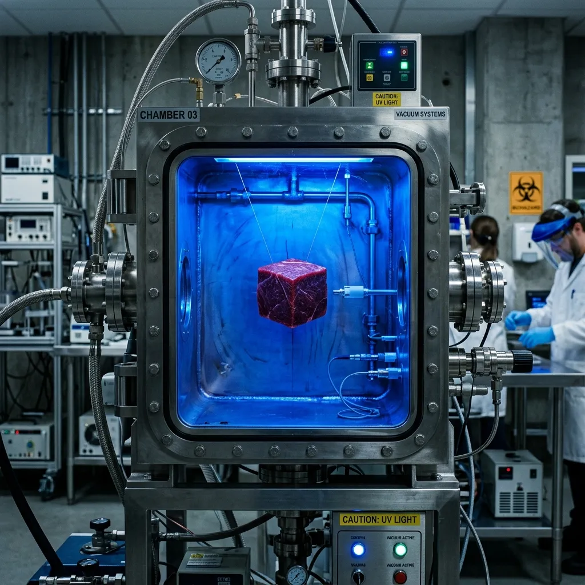

The Laboratory
Our Cambridge facility was originally constructed as a pharmaceutical-grade laboratory, heavily retrofitted to accommodate industrial acoustic desiccation. Maintaining absolute sterility, we have systematically engineered every variable out of the protein maturation equation. Our environment ensures that ambient bacteria, unregulated fungal cultures, and fluctuating moisture levels are eradicated, replaced instead by precision-controlled frequency chambers and active cleanroom filtration networks.

Ultrasonic Frequency Chambers
The core of our maturation methodology is executed within custom-fabricated 316L stainless steel bioreactors. These are not standard culinary aging cabinets; they are precision instruments engineered specifically for cellular disruption. Traditional refrigeration limits focus purely on temperature control, but our frequency chambers manipulate the molecular structure of the protein itself. By emitting targeted low-frequency ultrasonic waves directly into the isolated tissue, we generate micro-cavitation events that force internal moisture outwards at an accelerated rate.
This process bypasses the need for the external drying crust common in fungal aging. The acoustic bombardment achieves total moisture extraction and enzymatic breakdown uniformly throughout the cut, ensuring that the internal matrix is restructured without the application of heat. It is a strictly controlled mechanical procedure, designed for absolute desiccation without inadvertently initiating any cooking processes.
UV-C Sterilization Protocols
Total eradication of surface pathogens is non-negotiable within our ISO 7 cleanroom environment. To achieve this, every protein isolate is subjected to relentless 254 nm wavelength ultraviolet (UV-C) irradiation throughout the entire 120-day acoustic cycle. Atmospheric aging typically relies on the presence of competing flora, encouraging beneficial moulds to outcompete hazardous bacteria. We reject this biological gamble entirely.
The constant UV-C bombardment physically destroys the nucleic acids of any ambient microorganisms, preventing cellular replication and guaranteeing absolute sterility. By removing the biological variables of maturation, the protein's native enzymes can break down the muscle fibre unhindered by external fungal byproducts, resulting in an unprecedented flavour profile driven purely by the concentrated density of the tissue itself.
Atmospheric Void Controls
The degradation of premium protein during long-term storage is frequently caused by lipid oxidation, where oxygen interacts with fat to produce rancid flavour compounds. Our facility eliminates this risk through rigorous atmospheric void controls. Once the tissue is sealed within the 316L stainless steel bioreactors, powerful vacuum extractors remove the atmospheric oxygen entirely.
The acoustic desiccation process occurs within this total vacuum, preventing any lipid degradation. This meticulous extraction ensures that the complex fats remain unoxidized and perfectly preserved over the 120-day cycle. By controlling the atmosphere to such an exacting degree, we can guarantee that the final isolate exhibits zero off-flavours, maintaining the stark, concentrated profile of the raw material.
See Logistical Protocols